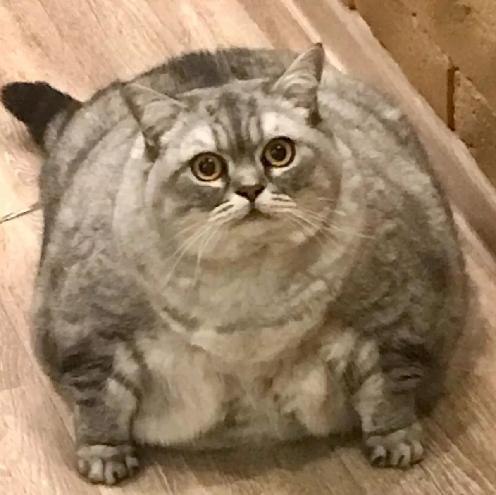

object‐fit: cover; preserves the aspect ratio by essentially clipping out the parts of the image that would need to stretch to fit in the width and height.Preserving the aspect ratio meanzs that you do not stretch or condense parts of the image to make it fit, and the object‐fit: cover; clips out the parts that would cause stretching or condensing.
